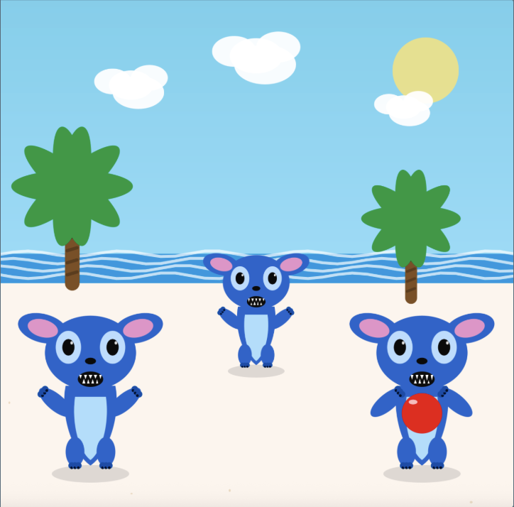

Creature Program

The design takes inspiration from the animated movie Lilo and Stitch, where Stitch is depicted as the creature.
The program employs various Java methods and variables to produce the final result, in order to give each creature a role and have the animation be more lively.
With the click of a mouse on the red ball, the three creatures pass the ball to one another in front of a scenic background where the waves are also animated.